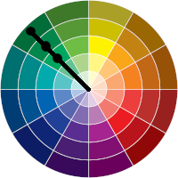

Cores monocromáticas são diferenciadas em sua saturação e brilho. Usa-se uma cor principal e, a partir dela, variamos esses dois elementos.
No Círculo Cromático, basta escolher uma cor e aproximar ou afastar do centro, obtendo assim diferentes níveis dessa cor.
